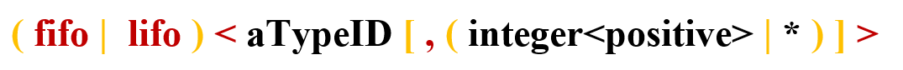
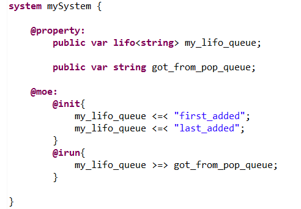
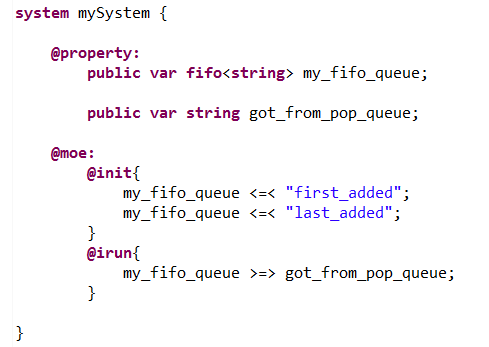
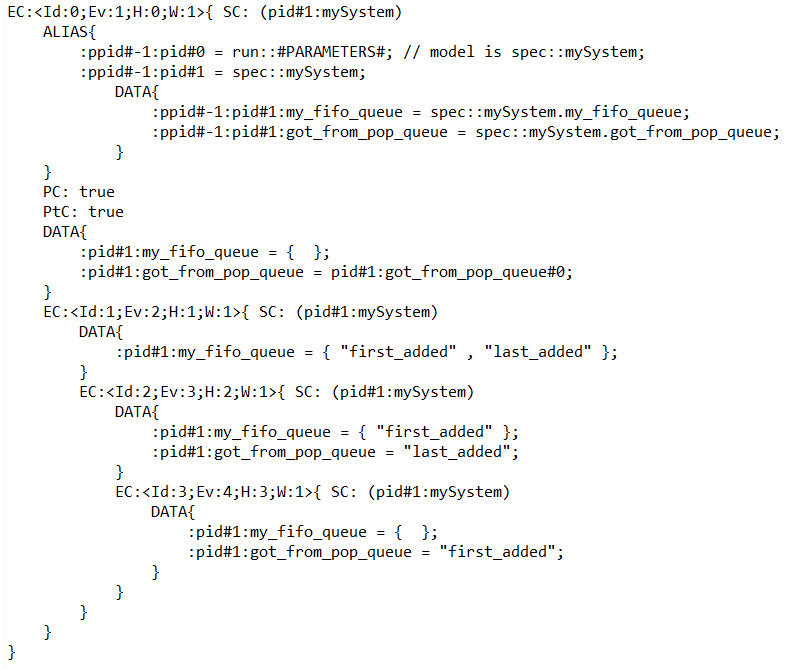
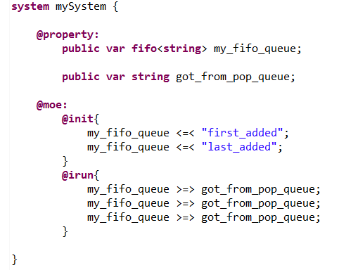
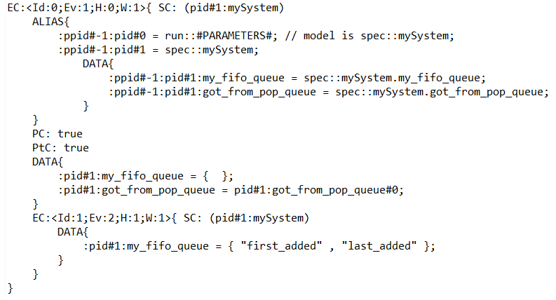

Queues are ordered collections with specific addition and removal policies.
The general syntax is the following (see BNF syntax) :
In the following we'll show among other things :
Let's consider the following system :
We declare a Last In First Out queue. During the initialization of the system, we push 2 values into the queue in a specific order. Then, by implementing the "@irun{...}" primitive of the system, we'll have the system retrieve a value from the queue at each evaluation step.
When doing a symbolic exploration, the generated "phase1.fscn" is the following :
We notice that at each Evaluation Context after the initialization, the "got_from_pop_queue" variable gets a new value taken from the "my_lifo_queue" variable.
However, the LIFO behavior isn't respected, this queue behaves like a FIFO : the "first_added" value is retrieved first, and the "last_added" last.
Let's consider the following system :
We declare a First In First Out queue. During the initialization of the system, we push 2 values into the queue in a specific order. Then, by implementing the "@irun{...}" primitive of the system, we'll have the system retrieve a value from the queue at each evaluation step.
When doing a symbolic exploration, the generated "phase1.fscn" is the following :
We notice that at each Evaluation Context after the initialization, the "got_from_pop_queue" variable gets a new value taken from the "my_lifo_queue" variable.
However, the FIFO behavior isn't respected, this queue behaves like a LIFO : the "last_added" value is retrieved first, and the "first_added" last.
When in an instruction block we try to retrieve an element from a queue that is empty, the engine simply ignores the transition that may lead to trying that. If there is no other changes of Evaluation Context that is possible, the symbolic execution terminates.
For instance if we have the following :
We see that there will be 2 elements inside the queue at the end of the initialization. However, at each step the system will try to retrieve 3 elements from the queue. As it is not possible, the symbolic execution will simply terminate after the initialization as seen in the following "phase1.fscn" file :
